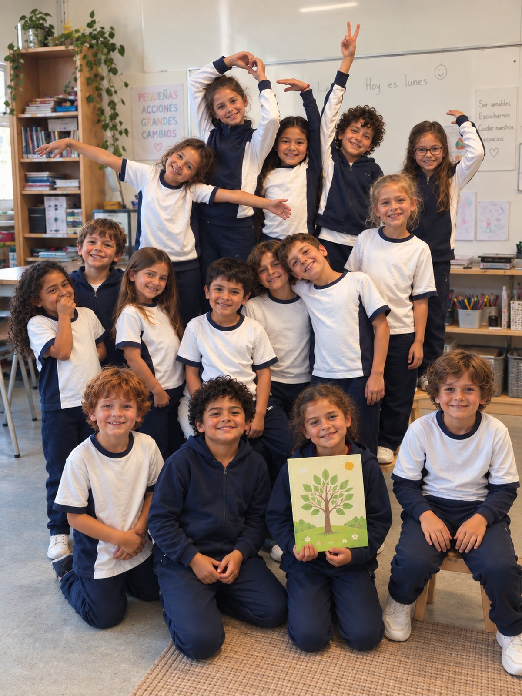

Todas las opciones usan los tonos de tu propia carta de colores y mantienen lo que ya elegiste: la banda de cifras en Aqua Blue, el pie en Azul Marino y los botones en terracota. Lo único que cambia es el fondo (y el blanco de las tarjetas), que es lo que hoy se ve muy pálido y plano.
Además del color, las tarjetas ahora se separan del fondo (antes eran casi del mismo tono, por eso todo se veía "al mismo nivel"), y el fondo deja de ser un color liso: lleva un velo muy suave del mismo tono, así no se ve plano.
El fondo actual: un crema rosado muy pálido, casi del mismo tono que las tarjetas (por eso se siente plano).
Tonos de tu carta: 20 White Sand #C8B8A8, aclarado
fondo #F3EADC tarjeta #FBF6EC banda #4A7A7B pie #082840
Tinta sobre fondo: 8.6:1 · tarjeta sobre fondo: 1.11:1 (hoy: 1.11:1)
Fundación ZIBA implementa programas educativos que entregan a las familias, a las comunidades escolares y a los niños, niñas y adolescentes, herramientas para prevenir la violencia sexual y construir entornos seguros.
Conoce nuestros programasSúmate como aliado
Cartas abiertas de nuestro equipo y de quienes trabajan cada día con niñas, niños y adolescentes.
Textos breves sobre prevención, evidencia y políticas públicas, escritos en lenguaje claro.
Diálogos con docentes, familias y especialistas sobre la protección de la infancia.
Cuando hablamos de violencia sexual contra niños, niñas y adolescentes, gran parte de nuestra conversación comienza cuando el daño ya ocurrió. Hablamos de denuncia. De investigación. De reparación. De tratamiento. Pero existe una pregunta anterior que todavía necesita ocupar mucho más espacio: ¿qué estamos haciendo antes de que ocurra?
El mismo tono de arena del que sale su fondo actual, más profundo y amarillo (menos rosado). Mismas tarjetas casi blancas: se separan del fondo.
Tonos de tu carta: 20 White Sand #C8B8A8, aclarado y sin rosa
fondo #E8DEC6 tarjeta #FFFDF7 banda #4A7A7B pie #082840
Tinta sobre fondo: 7.7:1 · tarjeta sobre fondo: 1.32:1 (hoy: 1.11:1)
Fundación ZIBA implementa programas educativos que entregan a las familias, a las comunidades escolares y a los niños, niñas y adolescentes, herramientas para prevenir la violencia sexual y construir entornos seguros.
Conoce nuestros programasSúmate como aliadoCartas abiertas de nuestro equipo y de quienes trabajan cada día con niñas, niños y adolescentes.
Textos breves sobre prevención, evidencia y políticas públicas, escritos en lenguaje claro.
Diálogos con docentes, familias y especialistas sobre la protección de la infancia.
Cuando hablamos de violencia sexual contra niños, niñas y adolescentes, gran parte de nuestra conversación comienza cuando el daño ya ocurrió. Hablamos de denuncia. De investigación. De reparación. De tratamiento. Pero existe una pregunta anterior que todavía necesita ocupar mucho más espacio: ¿qué estamos haciendo antes de que ocurra?
Fondo casi neutro (marfil muy claro, sin rosado) y tarjetas blancas. El color queda solo en el terracota de los botones y en la banda Aqua Blue.
Tonos de tu carta: 20 White Sand + 10 Antique Pink, casi sin color
fondo #EDE9DC tarjeta #FFFFFF banda #4A7A7B pie #082840
Tinta sobre fondo: 8.5:1 · tarjeta sobre fondo: 1.21:1 (hoy: 1.11:1)
Fundación ZIBA implementa programas educativos que entregan a las familias, a las comunidades escolares y a los niños, niñas y adolescentes, herramientas para prevenir la violencia sexual y construir entornos seguros.
Conoce nuestros programasSúmate como aliadoCartas abiertas de nuestro equipo y de quienes trabajan cada día con niñas, niños y adolescentes.
Textos breves sobre prevención, evidencia y políticas públicas, escritos en lenguaje claro.
Diálogos con docentes, familias y especialistas sobre la protección de la infancia.
Cuando hablamos de violencia sexual contra niños, niñas y adolescentes, gran parte de nuestra conversación comienza cuando el daño ya ocurrió. Hablamos de denuncia. De investigación. De reparación. De tratamiento. Pero existe una pregunta anterior que todavía necesita ocupar mucho más espacio: ¿qué estamos haciendo antes de que ocurra?
Fondo verde salvia muy claro, en la familia del Laboratorio y de la banda Aqua Blue. Frío suave, se aleja del rosado.
Tonos de tu carta: 14 Mint Green #A0B098 + 13 Sage Gray #989880, aclarados
fondo #E5EBDA tarjeta #FBFDF6 banda #4A7A7B pie #082840
Tinta sobre fondo: 8.4:1 · tarjeta sobre fondo: 1.19:1 (hoy: 1.11:1)
Fundación ZIBA implementa programas educativos que entregan a las familias, a las comunidades escolares y a los niños, niñas y adolescentes, herramientas para prevenir la violencia sexual y construir entornos seguros.
Conoce nuestros programasSúmate como aliadoCartas abiertas de nuestro equipo y de quienes trabajan cada día con niñas, niños y adolescentes.
Textos breves sobre prevención, evidencia y políticas públicas, escritos en lenguaje claro.
Diálogos con docentes, familias y especialistas sobre la protección de la infancia.
Cuando hablamos de violencia sexual contra niños, niñas y adolescentes, gran parte de nuestra conversación comienza cuando el daño ya ocurrió. Hablamos de denuncia. De investigación. De reparación. De tratamiento. Pero existe una pregunta anterior que todavía necesita ocupar mucho más espacio: ¿qué estamos haciendo antes de que ocurra?
Fondo azul grisáceo muy claro, institucional y sereno. Es el más frío de los cuatro y el que más se aleja del rosado.
Tonos de tu carta: 25 Baby Blue #98B0B8, aclarado
fondo #E1EAEE tarjeta #FBFDFE banda #4A7A7B pie #082840
Tinta sobre fondo: 8.4:1 · tarjeta sobre fondo: 1.20:1 (hoy: 1.11:1)
Fundación ZIBA implementa programas educativos que entregan a las familias, a las comunidades escolares y a los niños, niñas y adolescentes, herramientas para prevenir la violencia sexual y construir entornos seguros.
Conoce nuestros programasSúmate como aliadoCartas abiertas de nuestro equipo y de quienes trabajan cada día con niñas, niños y adolescentes.
Textos breves sobre prevención, evidencia y políticas públicas, escritos en lenguaje claro.
Diálogos con docentes, familias y especialistas sobre la protección de la infancia.
Cuando hablamos de violencia sexual contra niños, niñas y adolescentes, gran parte de nuestra conversación comienza cuando el daño ya ocurrió. Hablamos de denuncia. De investigación. De reparación. De tratamiento. Pero existe una pregunta anterior que todavía necesita ocupar mucho más espacio: ¿qué estamos haciendo antes de que ocurra?
1 Arena profunda · 2 Blanco cálido · 3 Salvia clara · 4 Azul muy claro. Si ninguna te convence, dime en palabras qué sensación buscas (más cálido, más frío, más oscuro, más claro) y preparo otras con tu carta.